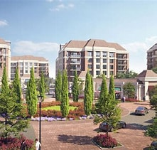

About Our Town
Welcome to Your Town! Our town is rich in history, culture, and local business opportunities. From small boutiques to large enterprises, we foster a thriving business community that welcomes visitors and residents alike.
Population: 50,000 | Founded: 1850 | Known for: Local festivals and community events
Local Attractions & Landmarks

The historic town center is home to shops, cafes, and public art displays.

Our museum showcases the town’s heritage and history through interactive exhibits.
Upcoming Events
- Chamber Networking Event – Jan 31
- Local Market Festival – Feb 15
- Business Workshop – Mar 5
- Annual Town Parade – Apr 10